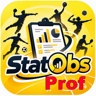

StatObs
Statistiques et bilan du sportif
-
observé par
-
Observable positif
Observable négatif
Synthèse des observables
Observable
Type
Nb
%
Bilan et objectifs
Enregistrement de la séance…
Exporter les résultats (.xlsx)
Imprimer / PDF
Nouvelle analyse ?